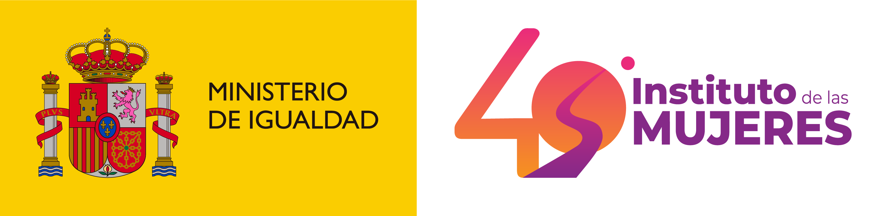

Que es la violencia de genero
La violencia contra las mujeres y las niñas es una problemática social con distintas manifestaciones, física, sexual, psicológica, económica, patrimonial o feminicida, que tiene como finalidad la dominación de las mujeres, lo que representa un obstáculo para su pleno desarrollo como personas.
Conceptos principales de CSS

Física
Cualquier acto que inflige un daño no accidental usando la fuerza física o un objeto.
Psicologica
Actos u omisiones que dañan la estabilidad psicológica, emocional y la autoestima de una persona.
Sexual
Cualquier acto sexual u otra conducta sexual que sea no consentida o realizada con coacción.

Economica o Matrimonial
Actos u omisiones que afectan la supervivencia de la víctima al limitar el acceso o control sobre recursos económicos y bienes.
Digital o Cibernetica
Actos dañinos cometidos a través de tecnologías de la información y la comunicación, como internet o redes sociales.
Simbólica
Es una forma de violencia cultural que reproduce estereotipos de género y refuerza relaciones de dominio-sumisión.
Fuentes Oficiales

https://www.igualdad.gob.es/ ||| https://www.inmujeres.gob.es/